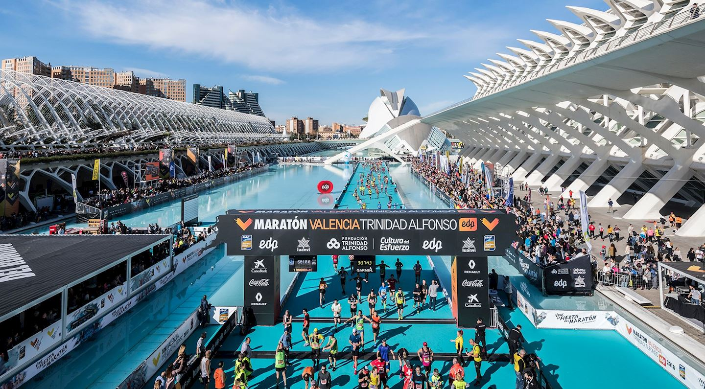
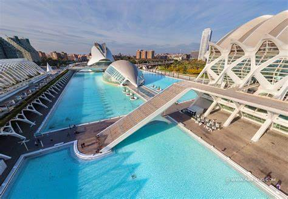
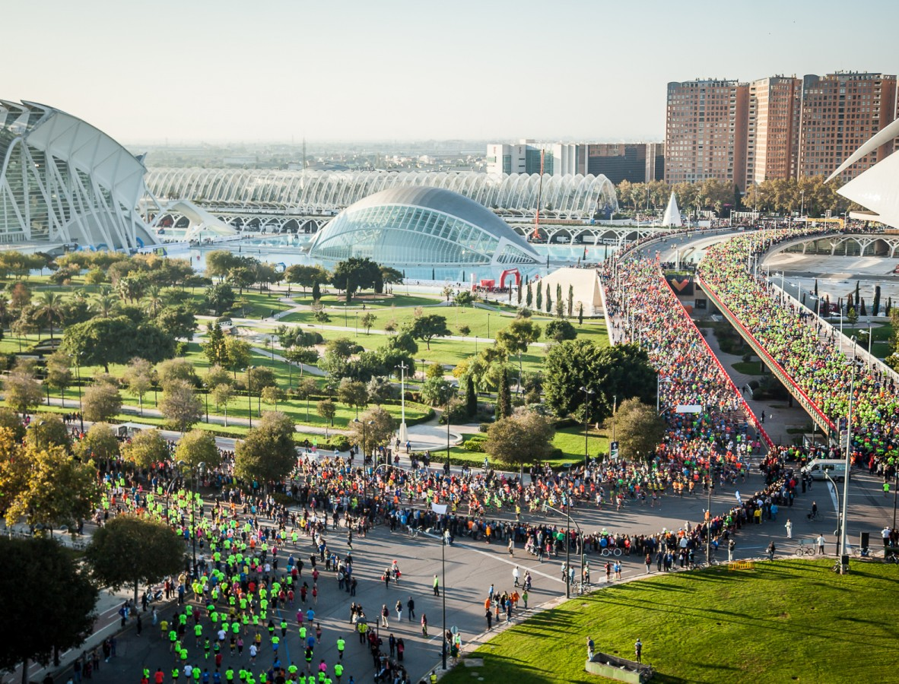

Valencia is the third most populated city in Spain after Madrid and Barcelona. However, the Mislata neighborhood in Valencia is the most densely populated area in Spain. It’s unlikely you’ll ever visit Mislata, but if you take the metro on your way to the airport, you will pass through it. 4. The Port of Valencia generates half of Spain’s GDP
   Home
Home